熔煉爐
把銅、黃金、鐵、銀、錫、鈾等礦石加工成對應礦粒。
需要：丙烷氣瓶、丙烷連接管從礦脈採集、熔煉與研磨開始，一路製作金屬礦錠、融合材料與終局核心，最後銜接 AshZone 裝備強化。
礦石與寶石走的是兩條不同加工路線。礦石先熔煉成礦粒，再到鐵砧鍛造成礦錠；未加工寶石則送到研磨石取得品質寶石。兩條路線最後會在融合製作與裝備強化階段交會。
從找到礦點開始，依照材料類型選擇正確工作站。
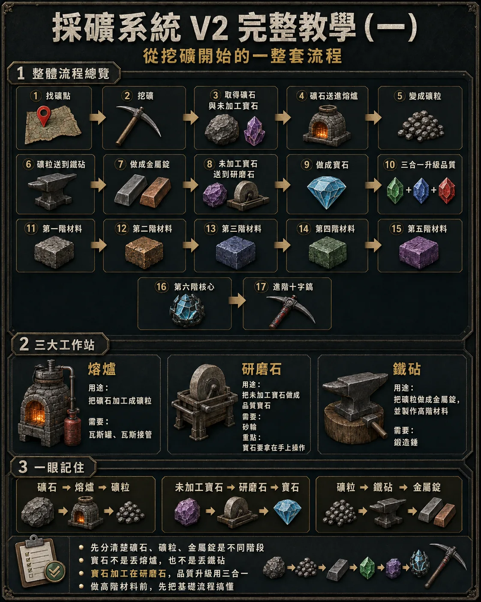
礦石進熔煉爐、礦粒進鐵砧、未加工寶石進研磨石。先把基礎加工分清楚，高階融合就不容易做錯。
把銅、黃金、鐵、銀、錫、鈾等礦石加工成對應礦粒。
需要：丙烷氣瓶、丙烷連接管將未加工寶石研磨成可用的品質寶石。
研磨結果會隨機得到瑕疵、標準或完美品質將礦粒鍛造成金屬礦錠，並繼續製作融合礦錠與高階材料。
需要：鍛造錘鐵礦是最重要的基礎材料之一，後續可進入鋼礦錠與虛空礦錠兩條融合支線。
製作瑕疵鋼礦錠，繼續升到標準、完美鋼礦錠。
製作瑕疵虛空礦錠，繼續升到標準、完美虛空礦錠。
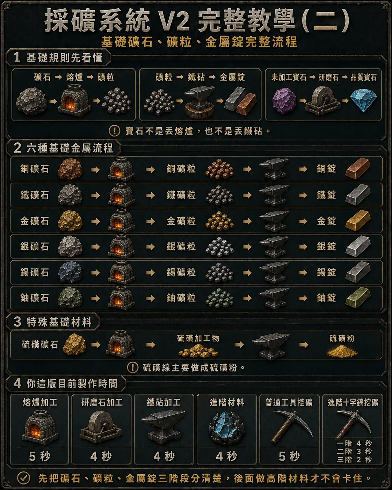
銅、黃金、銀、錫、鈾同樣遵循「礦石 → 熔煉 → 礦粒 → 10 礦粒 → 1 礦錠」。硫磺則屬於獨立材料線。
不同寶石會對應不同融合材料。先辨識種類，再決定要保留哪個品質。
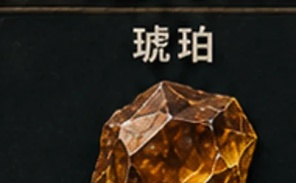
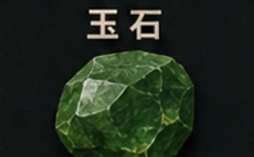
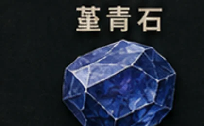
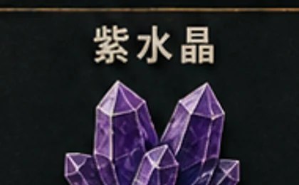
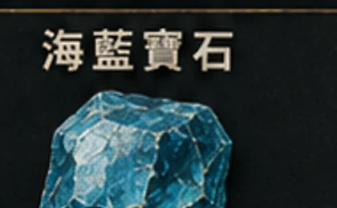
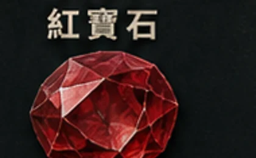
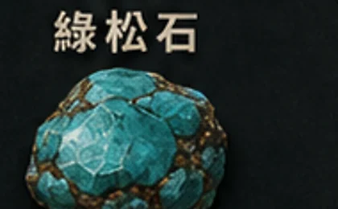
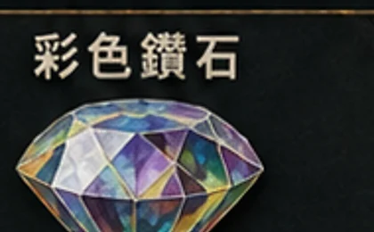
研磨未加工寶石時，會隨機獲得不同品質；低階品質也能繼續合成升級。
將相同種類、相同品質的寶石湊滿 3 顆進行升階。不同寶石種類或不同品質不能混合。
八條材料線使用相同階級規則：先做瑕疵，再升標準，最後製作完美融合礦錠。
Ⅰ1 銅礦錠 + 10 瑕疵琥珀 → 瑕疵青銅
Ⅱ2 瑕疵青銅 + 5 標準琥珀 → 標準青銅
Ⅲ3 標準青銅 + 2 完美琥珀 → 完美青銅
Ⅰ1 鐵礦錠 + 10 瑕疵翡翠 → 瑕疵鋼
Ⅱ2 瑕疵鋼 + 5 標準翡翠 → 標準鋼
Ⅲ3 標準鋼 + 2 完美翡翠 → 完美鋼
Ⅰ1 黃金礦錠 + 10 瑕疵海藍寶石 → 瑕疵琥珀金
Ⅱ2 瑕疵琥珀金 + 5 標準海藍寶石 → 標準琥珀金
Ⅲ3 標準琥珀金 + 2 完美海藍寶石 → 完美琥珀金
Ⅰ1 銀礦錠 + 10 瑕疵彩色鑽石 → 瑕疵水晶
Ⅱ2 瑕疵水晶 + 5 標準彩色鑽石 → 標準水晶
Ⅲ3 標準水晶 + 2 完美彩色鑽石 → 完美水晶
Ⅰ1 鈾礦錠 + 10 瑕疵堇青石 → 瑕疵複合
Ⅱ2 瑕疵複合 + 5 標準堇青石 → 標準複合
Ⅲ3 標準複合 + 2 完美堇青石 → 完美複合
Ⅰ1 鐵礦錠 + 10 瑕疵紫水晶 → 瑕疵虛空
Ⅱ2 瑕疵虛空 + 5 標準紫水晶 → 標準虛空
Ⅲ3 標準虛空 + 2 完美紫水晶 → 完美虛空
Ⅰ1 鈾礦錠 + 10 瑕疵紅寶石 → 瑕疵紅寶石礦錠
Ⅱ2 瑕疵紅寶石礦錠 + 5 標準紅寶石 → 標準紅寶石礦錠
Ⅲ3 標準紅寶石礦錠 + 2 完美紅寶石 → 完美紅寶石礦錠
Ⅰ1 錫礦錠 + 10 瑕疵綠松石 → 瑕疵稜彩
Ⅱ2 瑕疵稜彩 + 5 標準綠松石 → 標準稜彩
Ⅲ3 標準稜彩 + 2 完美綠松石 → 完美稜彩
第三階完美融合礦錠是終局製作的入口，兩兩組合後一路升到核心融合礦錠。
這條支線從鈾礦錠開始，逐階消耗特殊寶石，最後製作銥元素礦錠。
挖礦後期材料會直接銜接裝備成長。進入強化介面後，可確認裝備、能力變化、成功率與本次需要的材料。
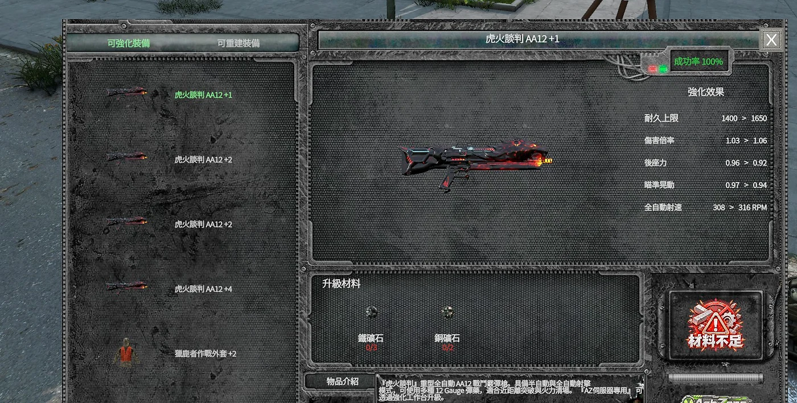
先選擇武器或可強化裝備，介面會顯示目前強化階級與能力。
依目前階級準備指定礦石、寶石或高階融合材料。
強化前先確認傷害、後座力、耐久等能力的預覽變化。
材料充足後執行強化；越高階的裝備，越需要前面採礦系統產出的稀有材料。
礦石熔煉爐 → 礦粒 → 鐵砧 → 礦錠
寶石研磨石 → 隨機品質 → 3 合 1 升階
融合基礎礦錠 + 對應寶石 → 第一～第三階 → 終局材料
強化保留高品質寶石與高階礦錠，作為裝備成長資源